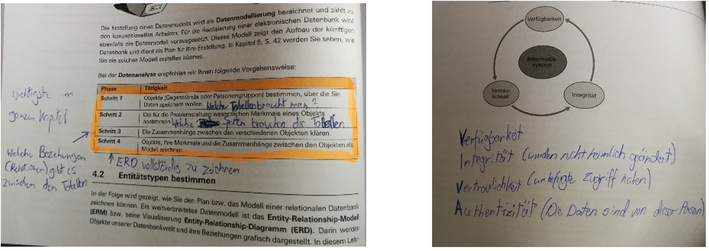

Wie ich Notizen mache


Was sollte beachten werden für gute Notizen?
Wichtig ist in der Kopfzeile einen Titel zu setzen, damit klar ist, um was für ein Thema es sich handelt. Ausserdem wäre es gut, wenn das Datum aufnotiert und in welchem Fach die Notizen gemacht wurden, definiert wird. Rechts neben den Notizen sollte es einen freien Platz haben, damit Argumente, Beispiele, Fakten, Statistiken, Schaubilder, Graphen oder Tabellen aufgezeichnet werden können. Gut ist es, mehr mit zu schreiben, dafür später die Notizen zu bearbeiten. In der Fusszeile können zum Beispiel Fremdwörter, oder etwas was man gerade nicht verstanden hat, notiert werden, um zu einem späteren Zeitpunkt, diese Fragen klären zu können. Zusätzlich etwas, was einem wichtig erscheint, mit einem Textmarker anstreichen.
Wie gut ist meine Notiztechnik
Wenn wir mit Hilfe eines Lehrmittels, oder eines Buches arbeiten und der Lehrer etwas erklärt, schreibe ich meine Notizen immer gerne direkt in das Buch. Falls wir im Online Dossier arbeiten, dann schreibe ich meine Notizen auf eine OneNote Seite. Die Notizen sollten einen gewissen Aufbau haben, wenn ich diese schreibe. Leider ist es bei mir nicht sehr übersichtlich und ich habe auch keine so schöne Handschrift, auch wenn ich meistens alles aufschreibe, was mir wichtig erscheint. Wenn ich etwas lese, das ich vor 1 Monat aufgeschrieben habe, kann es vorkommen, dass ich nicht mehr weiss, was ich damit sagen wollte. Am besten schreibe ich zukünftig auch das Datum und einen Titel auf, damit ich noch weiss, was wir an diesem Tag behandelt haben. Ausserdem sollte ich mehr schreiben, damit ich später mehr Text habe. Ausserdem sollte ich mehr Zeichnen und dazu Beispiele nennen, was mir bei den Notizen sehr helfen würde.